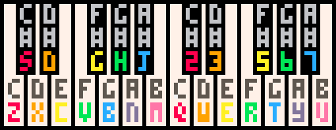
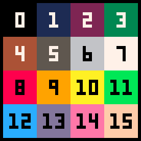

# version 0.1.8
pico-8 [switches] [filename.p8] # run pico-8 from the system cli
-run # boot filename.p8 on startup
-width n # set the window or screen width and adjust scale to fit if not specified
-height n # set the window or screen height and adjust scale to fit if not specified
-scale n # set the size of each pico-8 pixel. "-scale 3" gives pixels rendered at 3x3
-windowed n # set windowed mode off (0) or on (1)
-sound n # sound volume 0..256
-music n # sound volume 0..256
-joystick n # joystick controls starts at player n (0..7)
-aspect n # set the aspect ratio. 420 means 1:1 (default), 560 for 4:3, 525 for 5:4 etc.
-splore # boot in splore mode
-home path # customise data directory
-gif_len n # set the maximum gif length in seconds (1..120)
# specs
- display: 128x128, fixed 16 colour palette
- input: 6 buttons
- cartridge size: 32k
- sound: 4 channel, 64 definable chip blerps
- code: lua, max 8192 tokens of code
- sprites: single bank of 128 8x8 sprites + 128 shared
- map: 128x32 8-bit cels + 128x32 shared

music([n, [fade_len, [channel_mask]]]) -- play music, -1: stop
sfx(n, [channel, [offset]]) -- play sfx, -1: stop in channel, -2: release loop in channel
cartdata(id) -- open cart data named id (once per execution!)
dget(idx) -- get number at index
dset(idx, val) -- set number at index to value
cocreate(f) -- returns a coroutine that executes f
coresume(c) -- resume coroutine c execution
costatus(c) -- returns true if c is still executing, false otherwise
yield() -- use inside a coroutine; makes a coroutine pause execution until next resume
view coroutines thread

camera([x, y]) -- set camera position
circ(x, y, r, [col]) -- draw circle
circfill(x, y, r, [col]) -- draw filled circle
clip([x, y, w, h]) -- set screen clipping region
cls() -- clear screen
color(col) -- set default color
cursor(x, y) -- set cursor and CR/LF margin position
fget(n, [f]) -- get values of sprite flags
flip() -- flip screen back buffer
fset(n, [f], v) -- set values of sprite flags
line(x0, y0, x1, y1, [col]) -- draw line
pal(c0, c1, [p]) -- switch colour 0 to colour 1; p = 0 = draw palette; p = 1 = screen palette
palt(col, t) -- set transparency for colour to t (bool)
pget(x, y) -- get pixel colour
print(str, [x, y, [col]]) -- print string
pset(x, y, [col]) -- set pixel colour
rect(x0, y0, x1, y1, [col]) -- draw rectangle
rectfill(x0, y0, x1, y1, [col]) -- draw filled rectangle
sget(x, y) -- get spritesheet pixel colour
spr(n, x, y, [w, h], [flip_x], [flip_y]) -- draw sprite
sset(x, y, [col]) -- set spritesheet pixel colour
sspr(sx, sy, sw, sh, dx, dy, [dw, dh], [flip_x], [flip_y]) -- draw texture from spritesheet
map(cel_x, cel_y, sx, sy, cel_w, cel_h, [layer]) -- draw map, layers from flags, sprite 0 is empty
mapdraw(cel_x, cel_y, sx, sy, cel_w, cel_h, [layer]) -- same as 'map()', draw map
mget(x, y) -- get map value
mset(x, y, v) -- set map value
-32768.0 .. 32767.99 -- numeric representation range
abs(x) -- x absolute value
atan2(dx, dy) -- convert (dx, dy) to an angle in [0..1]
band(x, y) -- bitwise conjunction
bnot(x) -- bitwise negation
bor(x, y) -- bitwise disjunction
bxor(x, y) -- bitwise exclusive disjunction
cos(x) -- x cosine, [0..1]
flr(x) -- round down
-flr(-x) -- not a function per se, but will work as ceil(x)
max(x, y) -- x/y maximum
mid(x, y, z) -- x/y/z middle value
min(x, y) -- x/y minimum
rnd(x) -- random, 0 <= n < x
sgn(x) -- returns argument sign: -1, 1; sgn(0) = 1;
shl(x, y) -- shift left
shr(x, y) -- shift right
sin(x) -- x sine, [0..1], inverted
sqrt(x) -- x square root
srand(x) -- set random seed
cstore(dest_addr, src_addr, len, [filename]) -- copy bytes from ram to rom [load from filename]
memcpy(dest_addr, src_addr, len) -- copy bytes
memset(dest_addr, val, len) -- set len bytes to val
peek(addr) -- read byte in ram address
poke(addr, val) -- write val in ram address
reload(dest_addr, src_addr, len, [filename]) -- copy bytes from rom to ram [load from filename]
# types:
1. base ram (32kB)
2. cart rom
3. lua ram (1MB)
# ram layout:
0x0 - gfx
0x1000 - gfx2/map2 (shared)
0x2000 - map
0x3000 - gfx_props
0x3100 - song
0x3200 - sfx
0x4300 - user data
0x5e00 - persistent cart data (256 bytes)
0x5f00 - draw state
0x5f40 - hardware state
0x5f80 - gpio pins (128 bytes) // in development
0x6000 - screen (8k)
-- mouse
poke(0x5f2d, 1) -- initiate mouse listener
stat(32) -- read x coord
stat(33) -- read y coord
stat(34) -- read button bitmask (1 = primary, 2 = secondary, 4 = middle)
-- extra graphics modes
poke(0x5f2c, 0) -- standard, 128x128
poke(0x5f2c, 1) -- horizontal stretch, 64x128
poke(0x5f2c, 2) -- vertical stretch, 128x64
poke(0x5f2c, 3) -- zoomed, 64x64
poke(0x5f2c, 4) -- standard, 128x128
poke(0x5f2c, 5) -- mirror left half
poke(0x5f2c, 6) -- mirror top half
poke(0x5f2c, 7) -- mirror top-left quarter
-- exec flow
_update() -- called once per update at 30fps
_update60() -- called once per update at 60fps
_draw() -- called once per visible frame
_init() -- called once on program startup
holdframe() -- used automatically by _draw(), _update()
-- cli
assert(condition) -- verify that condition is true
cd .. -- change to parent directory
cd [dirname] -- change directory
dir() -- list items
exit() -- close pico-8 app
export(filename.html) -- export game in html / js
export(filename.png) -- export spritesheet
export(filename.wav) -- export the current sfx / music
export(filename%d.wav) -- export all sfx as numbered files
folder() -- open carts folder in operating system
help() -- show summary of system commands
import(filename.png) -- import spritesheet. expects 128x128 png and colour-fits to the pico-8 palette
info() -- print cart info
install_demos() -- install demo p8 carts alongside pico-8 app
install_games() -- install selection of bbs carts
keyconfig() -- keyboard configuration for player buttons
load(filename) -- load cart
ls() -- list items
menuitem(index, [label, callback]) -- add an extra item to the pause menu; index = 1..5; no label or callback removes the item
mkdir(dirname) -- create directory
printh(str) -- print string to terminal
reboot() -- reboot pico8
resume() -- resume cart execution
run() -- boot cart
save(filename) -- save cart
shutdown() -- close pico-8 app
splore() -- explore cartridges
stat(x) -- 0 = mem; 1 = cpu;
time() -- returns seconds since last reboot
type(v) -- returns type of v: number, string or table
// javascript
pico8_gpio[] // read and write gpio pins
#s -- string length
"three "..4 -- string concatenation
sub(str, from, [to]) -- substring
-- tables
add(t, v) -- add v to t
all(t) -- used in 'for v in all(t)' loops
count(t) -- returns number of elements in the table
del(t, v) -- delete first instance of v in t
foreach(t, f) -- call f() for each v in t
pairs(t) -- used in 'for k,v in pairs(t)' loops
-- metatables
setmetatable(t, mt) -- set metatable mt to table t
view metatables thread
general
- fullscreen: alt + enter / cmd + f
- quit: alt + f4 / cmd + q
- reload and run: ctrl + r
- save: ctrl + s
- screenshot: f6 / f1
- cart img: f7 / f2
- start video: f8 / f3
- save video: f9 / f4
- navigate editors: alt + right, left
- cli completion: tab
whilst running
code editor
- select: shift
- cut: ctrl + x
- copy: ctrl + c
- paste: ctrl + v
- undo: ctrl + z
- redo: ctrl + y
- duplicate line: ctrl + d
- search: ctrl + f
- repeat search: ctrl + g
- navigate functions: alt + up, down
- button glyphs: shift + l, r, u, d, x, o
splore
- navigate lists: left / right
- navigate carts: up / down
- launch cart: x / o / menu
- favourite cart: f
sprite / map editor
- undo: ctrl + z
- copy: ctrl + c
- paste: ctrl + v
- pan: space / mmb
- navigate sprites: q / w
- navigate colours: 1 / 2
- navigate tabs: + / -
- fullscreen: tab
- zoom: mousewheel
- flip y: f
- flip x: v
- rotate: r
- move: cursors
-
draw tool:
- replace colour: lctrl
- eyedropper: rmb
-
stamp tool:
- stamp w/ transparency: lctrl
-
select tool:
- select sprites: shift + drag
sfx / music editor
- play / pause: space
- copy: ctrl + c
- paste: ctrl + v
- set all notes: shift + lmb
- modify speed: < / >
- navigate: home, end, pageup/down, mousewheel
- navigate patterns: + / -
- snap to Cm pentatonic: ctrl
- speed x4: shift
- release loop: a
- delete: backspace
-
effects:
- 0: none
- 1: slide
- 2: vibrato
- 3: drop (drum kick!)
- 4: fade in
- 5: fade out
- 6: fast arpeggio (4 notes)
- 7: slow arpeggio (4 notes)